Sensational Spider-Man (1995 - 2012)
| Comic Book | Release Date | Cover |
|---|---|---|
| Sensational Spider-Man #-1 Here There Be Monsters! | 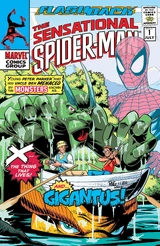 | |
| Sensational Spider-Man #0 Ultimate Commitment | 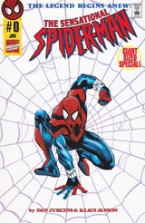 | |
| Sensational Spider-Man #1 Of Mists and Mirrors |  | |
| Sensational Spider-Man #2 Remains of the Day | 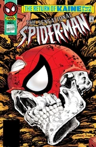 | |
| Sensational Spider-Man #3 Headlines | 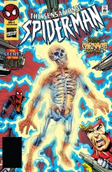 | |
| Sensational Spider-Man #4 Shooting Spider-Man | 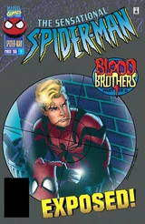 | |
| Sensational Spider-Man #5 Collisions with the Past | 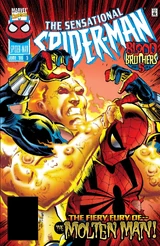 | |
| Sensational Spider-Man #6 The Ultimate Responsibility | 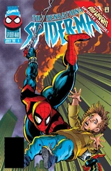 | |
| Sensational Spider-Man #7 High Drama | 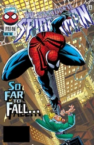 | |
| Sensational Spider-Man #8 The Usual Suspects | 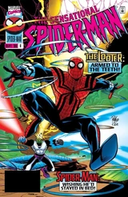 | |
| Sensational Spider-Man #9 Swarmed! | 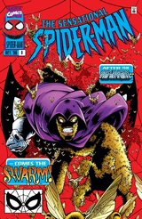 | |
| Sensational Spider-Man #10 Global Swarming | 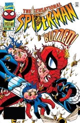 | |
| Sensational Spider-Man #11 Deadly Diversions | 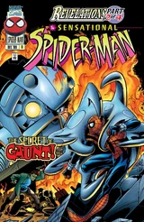 | |
| Sensational Spider-Man #12 A Matter of Respect | 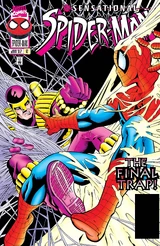 | |
| Sensational Spider-Man #13 A Savage Land | 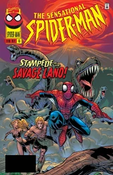 | |
| Sensational Spider-Man #14 Higher Ground | 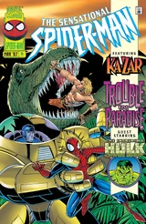 | |
| Sensational Spider-Man #15 Deluge Conclusion: Inundated! | 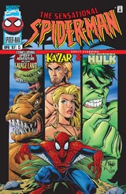 | |
| Sensational Spider-Man #16 Paralyzed! | 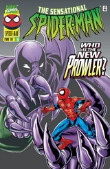 | |
| Sensational Spider-Man #17 Helpless! | 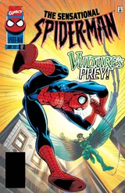 | |
| Sensational Spider-Man #18 Powerless & Responsibility | 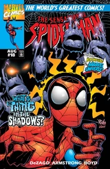 | |
| Sensational Spider-Man #19 The Return | 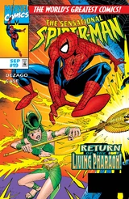 | |
| Sensational Spider-Man #20 Akasha Triumphant | 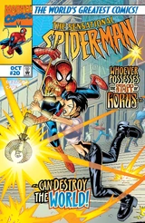 | |
| Sensational Spider-Man #21 Opening Doors | 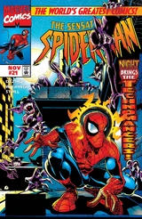 | |
| Sensational Spider-Man #22 The Politics of Magic | 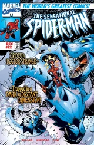 | |
| Sensational Spider-Man #23 The Spirits is willing; The Flesh... | 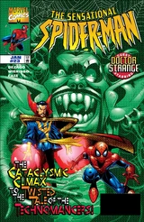 | |
| Sensational Spider-Man #24 A Christmas Story | 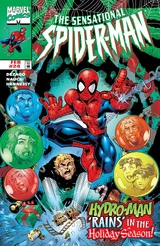 | |
| Sensational Spider-Man #25 Into the Dance! | 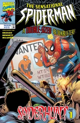 | |
| Sensational Spider-Man #26 Signs of the Times | 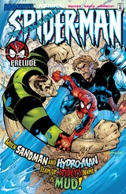 | |
| Sensational Spider-Man #27 Inventing the Hornet! | 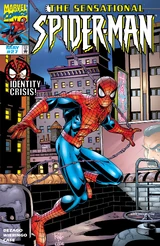 | |
| Sensational Spider-Man #28 Hornet's Nest | 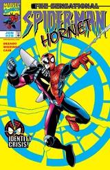 | |
| Sensational Spider-Man #29 Back on his Game! | 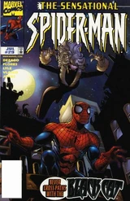 | |
| Sensational Spider-Man #30 Cat & Mouse | 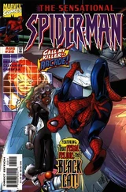 | |
| Sensational Spider-Man #31 More than a Feelin' | 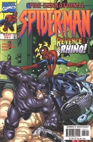 | |
| Sensational Spider-Man #32 The Gathering of Five Part One: Acquisitions | 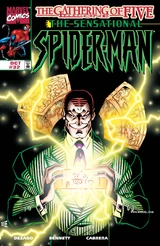 | |
| Sensational Spider-Man #33 The Gathering of Five Part Five: Gifts | 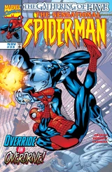 | |
| Sensational Spider-Man #33.1 Monsters! Part 1 of 2 | 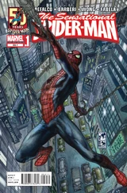 | |
| Sensational Spider-Man #33.2 Monsters! Part 2 of 2 | 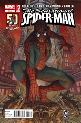 |